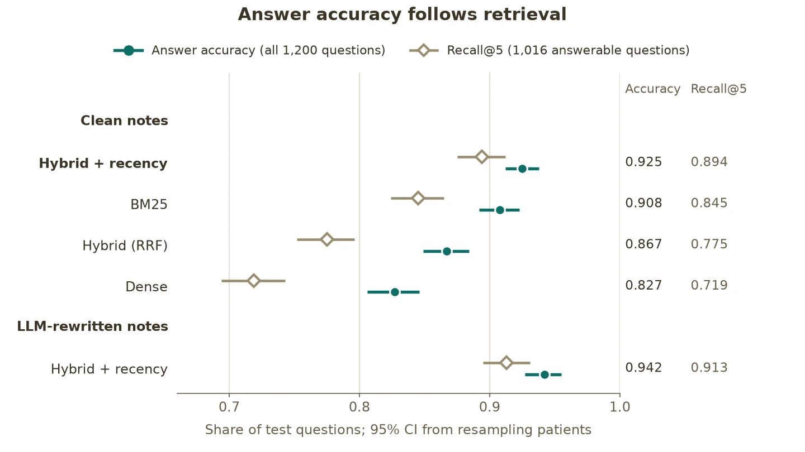

Health data engineering · GenAI evaluation
From FHIR to OMOP to RAG: answering clinical questions from notes, and measuring it honestly
An end-to-end real-world-evidence pipeline on synthetic patients: FHIR records built into an OMOP common data model with dbt, clinical notes with exact ground truth, and a retrieval-augmented LLM that answers questions about each patient with citations. The test set was frozen before any tuning and scored once, against a plain SQL baseline.

When does an LLM over notes beat a query over tables?
Clinical questions are answered either from structured data (conditions, drugs, labs) or from free text. Retrieval-augmented generation promises the second, but its accuracy is usually reported on a handful of examples, with no baseline and no account of how it fails. This project builds both routes over the same synthetic patients, so every answer can be checked exactly.
A tested OMOP CDM, with mapping coverage as a metric
Synthea generates FHIR R4 bundles with fixed seeds and dates, so output is byte-identical across runs. Raw resources land in PostgreSQL as JSON, and dbt builds an OMOP CDM v5.4 subset: person, visits, conditions, drugs, measurements, procedures, observations, death and notes. Source codes are mapped to OHDSI standard concepts and routed to tables by the concept’s domain, not by FHIR resource type.
| CDM table | Records | Records mapped | Codes mapped |
|---|---|---|---|
| Measurement | 601,766 | 99.99% | 98.1% |
| Observation | 321,049 | 99.93% | 91.6% |
| Drug exposure | 72,577 | 100% | 100% |
| Condition | 17,969 | 99.0% | 98.2% |
| Procedure | 83,545 | 87.3% | 40.7% |
The procedure gap is CDT dental codes, which are licensed separately and not distributed through Athena: a licensing gap, not an ETL bug, and the coverage test warns about it as designed. 108 dbt data tests cover keys, referential integrity, date logic, events after death, plausible lab ranges and conformance to the official CDM field specification, and 6 dbt unit tests show each rule fires on deliberately corrupted rows.
Notes where every fact is known
Notes are generated from the CDM by templates, so every statement has a known position, polarity (negated or not), time (current or historical) and subject (patient or relative). The traps are planted deliberately: “no evidence of…”, “h/o … resolved”, “Mother: …”. Some facts exist only in the notes, such as family history and why a drug was stopped, so there is a category SQL cannot answer.
- 1,800 questions across 11 templates, each with an answer derived by SQL and the exact facts that support it.
- Split by patient (75 dev, 150 test), so no patient’s notes appear in both. The test file was frozen by SHA-256 before retrieval was built, and the code refuses to score it outside the final run.
- A messier copy: an LLM rewrote the test notes into terse clinical shorthand, with each fact tagged so a deterministic validator could confirm nothing was lost or changed; 98.9% of notes passed.
Search one patient’s chart, cite every claim
Notes are chunked and embedded locally (bge-small, CPU) into pgvector. Retrieval is scoped to one patient, as chart search is, and compares BM25, exact dense search, hybrid fusion (reciprocal rank fusion) and hybrid with recency, which re-sorts the top 20 newest-first for time-sensitive questions. Claude answers from the top 5 excerpts in a fixed JSON format; the schema only allows citing excerpts that were shown.
A hard spend cap is enforced in a Postgres ledger before each call, responses are cached so a re-run never pays twice, and the test runs went through the batch API at half price. All five test runs, the note rewrite and the dev pilot cost $70.56.
Retrieval decides accuracy; SQL wins where the data is structured
| Configuration | Recall@5 | Accuracy (95% CI) | Wrong after a retrieval miss |
|---|---|---|---|
| Dense | 0.719 | 0.827 (0.806–0.846) | 118 |
| Hybrid (RRF) | 0.775 | 0.867 (0.849–0.884) | 109 |
| BM25 | 0.845 | 0.908 (0.892–0.923) | 84 |
| Hybrid + recency | 0.894 | 0.925 (0.912–0.938) | 31 |
| Hybrid + recency, rewritten notes | 0.913 | 0.942 (0.927–0.955) | 26 |
Confidence intervals come from a bootstrap that resamples patients, because questions about the same patient are correlated. The four clean configurations rank identically on retrieval and on accuracy. When the right excerpt was shown, the model rarely erred: at most 10 temporal or value errors per run, and no negation errors.
Plain SQL over the CDM scores 1.000 on every structured question type, bar one disagreement in 859 (SNOMED files eclampsia under seizure disorder, so SQL says yes where the note-level answer is no). The notes were generated from the same CDM, so SQL is a ceiling by construction. RAG’s value is in note-only questions, family history and stop reasons, where it scored 1.000 on 157 questions that SQL cannot answer at all.
How it fails matters more than how often
- Retrieval misses dominate. Every wrong answer was classified once; retrieval misses account for most errors in every run, and they split into a safe outcome (“not documented”) and an unsafe one (a wrong answer). Hybrid with recency turned most misses into safe abstentions.
- Stale lab values. The weakest question type is the most recent lab result (0.61). Every failure is a retrieval miss, after which the model reports an older value as the latest: the most clinically dangerous pattern in the results.
- Rewritten notes are not easier. They scored higher only because they are about 20% shorter, so each chunk carries more facts. Messiness itself lowered rank-1 recall and cut stop-reason accuracy from 1.00 to 0.80.
- Extra detail beyond the citations. In a 50-claim grounding check, every unsupported claim added a diagnosis or resolution date that its cited excerpts did not show. The automatic grounding rule caught all of them and was, if anything, too strict.
What this does and doesn’t show
What it supports
- On these notes, answer quality is limited by retrieval, not by the model’s reasoning.
- Recency-aware hybrid retrieval cuts unsafe wrong answers by more than half compared with BM25.
- For facts the CDM already holds, SQL is exact, cheaper and auditable.
What it doesn’t show
- Clinical performance: the data is synthetic and the notes are templated, so these numbers are an optimistic upper bound.
- Search across a hospital: retrieval is within one patient’s chart, about 65 chunks each.
- Run-to-run model variance: one model, one prompt, one run; the intervals cover patient sampling only.
All data is synthetic, generated by Synthea. No real patient data was used. OHDSI vocabularies were downloaded from Athena and are not redistributed.